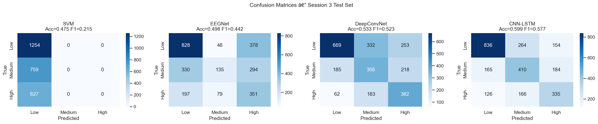
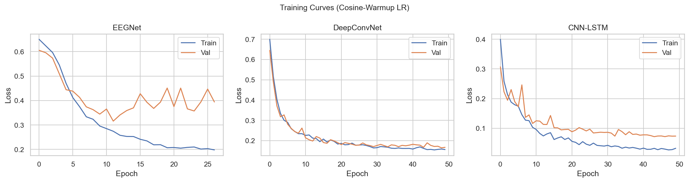
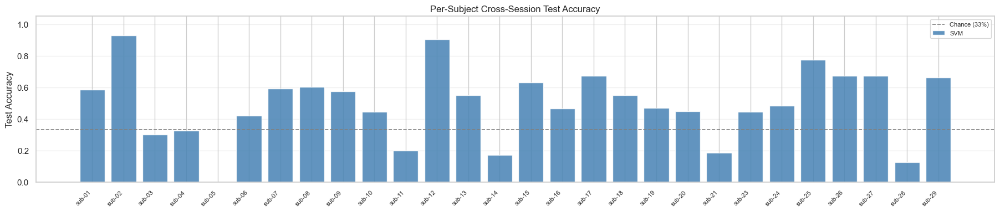

01The problem
EEG-based workload classifiers don't generalize across sessions. The signal you trained on stops being the signal you test on.
Mental workload monitoring from EEG matters in safety-critical jobs, air traffic control, surgery, process supervision, because excessive workload causes fatigue and errors. The reliability problem is that electrode placement shifts, impedance changes, and cognitive adaptation mean session 3 of the same task looks like a different signal distribution from sessions 1 and 2. A model trained on S1 + S2 can simply learn session-specific noise and look great until it sees S3.
The evaluation protocol I committed to was explicitly designed around that problem: train on sessions S1 + S2, test blind on S3. No peeking, no aggregating across sessions, no shuffling. If the model doesn't generalize, the test set says so.
02Approach
I worked in four stages, each one a fair comparison against the previous, on the same blind-S3 test set:
- SVM baseline on band-power features (theta 4–8 Hz, alpha 8–13 Hz, beta 13–30 Hz; 186 features per window). 47.5% accuracy. Useful diagnostic, confirms the signal is there.
- Standard deep learning: EEGNet (compact CNN designed for short windows, struggled at 8s) and DeepConvNet (hierarchical convolutions, 53.3%).
- Multi-scale CNN-LSTM, the primary model. Three parallel convolutional branches with different kernel sizes for beta (k=7, ~28ms), alpha (k=15, ~60ms), and theta (k=31, ~124ms), followed by a BiLSTM with 2-head temporal attention. 59.9%.
- CBraMod fine-tuning. Two-stage linear-probe-then-full fine-tuning of the CBraMod EEG foundation model (ICLR 2025), as a comparison against the from-scratch CNN-LSTM.
03Key decisions
A handful of choices made more difference than the architecture itself:
04The hard part: the Medium class
Three-class workload (Low / Medium / High) is much harder than binary (Low vs High). Binary on this dataset hits 94.8%, almost trivially easy. Three-class sits at ~60%. The reason isn't the model: Medium workload EEG is physiologically heterogeneous. The same person, doing the same task at medium difficulty, shows variable theta/alpha patterns depending on fatigue and engagement. It genuinely overlaps with both Low and High.
Every model I tested, SVM, EEGNet, DeepConvNet, CNN-LSTM, predicts Medium → Low more than half the time. This isn't a modelling failure; it's a data-level problem. The case study documents it rather than papers over it.

An honest failure I document
CORAL domain adaptation was applied asymmetrically in one of the SVM experiments, the model was trained on original features but tested on CORAL-transformed features. That caused the SVM to collapse to predicting everything as Low (macro-F1 = 0.21).
It's in the case study because the methodological lesson is more useful than the result: domain adaptation must be applied symmetrically across train and test. If you can show your own failure mode cleanly, you can fix the next one faster.
05Results
All numbers below are on the blind session-3 test set, with 29 subjects and 2,640 windows.
| Model | Accuracy | Macro-F1 |
|---|---|---|
| SVM (band-power) | 47.5% | 0.21 |
| EEGNet | 49.8% | 0.44 |
| DeepConvNet | 53.3% | 0.52 |
| CNN-LSTM (multi-scale) | 59.9% | 0.58 |
| Ensemble (DCN + LSTM) | 59.0% | 0.58 |
Net gain from the architectural improvements over a baseline CNN-LSTM: +4.3pp accuracy, +11.6pp Medium-F1. The ensemble does not beat the best single model, diversity between DCN and CNN-LSTM is not large enough on this dataset to be worth the inference cost.


06What I'd do differently
Three things I'd pursue next, in priority order:
- Test-time adaptation without labels. AdaBN plus entropy minimisation would let the model partially calibrate to a new session's distribution at inference, which is exactly what the 8 near-chance subjects need. The protocol stays blind in the labelled sense, only the inputs are used.
- Fine-tune LaBraM, not just CBraMod. LaBraM was pretrained on 2,500+ hours of diverse EEG and reported 85.8% on a workload benchmark vs 73.9% for from-scratch models. The pre-training distribution is closer to what cross-session evaluation actually demands.
- Multimodal fusion with ECG. The COG-BCI dataset already includes an ECG channel and HRV is a more session-stable correlate of workload than EEG band power. A small fusion head is probably the cheapest gain on the table.
Grad-CAM saliency, separately, showed that the model uses distributed temporal attention across the 8-second window rather than fixating on a single moment. That's physiologically plausible, workload is a sustained state, not an event, but it also means the model can't be reduced to "the key moment in the epoch." The interpretability story is honest about that.